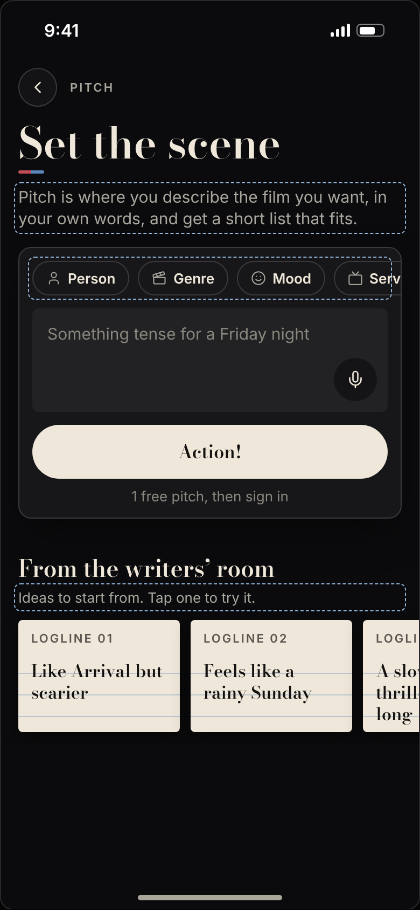

Same order as v1 (kinds row, picks, box, Action!), made calmer and roomier. The box is a page to write on: 156 tall, four lines of Newsreader 19, the rotating example as its placeholder, the mic a 44 circle in its corner. The kinds row steps back: outline chips in sans 15 regular with faint 16 icons, one line that fades out on the right as the app's other sideways rows do. Everything in the panel sits 16 in and 12 apart. v2b drops the panel's border and shadow. Drawn as a signed-out open on iPhone 390.
Bold 13 chips at 32, a 96 box in sans 15 that reads as a form field, inset 12 with 12 gaps, the panel's border and shadow.

Kinds row quieter and bigger to read; the box 156 with the example in Newsreader 19 (it rotates through the pitch lines, a new one each open); Action! 52. Panel inset 16, gaps 12.
Two lines in, the words are cream Newsreader, the box takes a 1px edge while focused, and there is room for two more lines before it scrolls. (Keyboard left off so the panel shows.)
Picks sit 12 under the row they came from, in the chosen blue, 36 tall with a 32 ×. The row never moves; the box and Action! step down.
The same, two options picked, with the panel's border and shadow dropped: the fill (panel-2 on the black ground) holds the group, and the box is the only edge you see.
Build v2b. With the box now the big, obvious object, the panel's outline is a second frame around a frame, and its shadow adds weight under a page that should feel quiet. The fill alone (panel-2, one step up from the ground) still says "this is the ask", the box (soft, one step up again) says "write here", and Action! is the only bright thing. Fewer lines, same grouping.
Keep v2's sizes either way: chips 36 (sans 15, 16 icons, their 44 target from the row's 4 above and below), box 156 at radius 12 with 16 inside, Newsreader 19/24, mic 44, Action! 52, everything 12 apart.
The box is a writing surface, not a form field. The reading serif at 19 makes the example read as the start of a sentence, and four lines of height say "write as much as you like". The chips step back: regular weight, faint icons and no fill, so the row reads as optional help above the box instead of competing with it; picks are the only blue. The right-edge fade (the app's 36px fade-r on the person page's role row) shows the row goes on (Service, Decade, Length…) without a half-cut chip.
The placeholder Like Arrival but scarier…
isn't in today's twelve PitchCopy.placeholders; add it to the set, or the box shows any of the twelve. Typing rule 1274 is unchanged.
iPhone sentenceBox: minHeight 96 → 156, padding 14 → 16, the field and placeholder in Typo.read(19); mic frame 40 → 44, padding 10 → 12; keep the trailing padding only on the lines beside the mic (an exclusion path on the text container) so lines 1 to 3 use the full width. optionRows: chips Theme.chipH 32 → 36, Typo.body() regular, icons 16 in Theme.faint; a trailing 36 fade mask on the kinds ScrollView. askCard: padding 16, spacing 12, no stroke or shadow (v2b). Action! 52.
Web Recut.tsx: the same in the ask card (.recut-box min-height 156, Newsreader 19, the kinds row with the fade-r mask). The writers' room line and the order are as in v1.